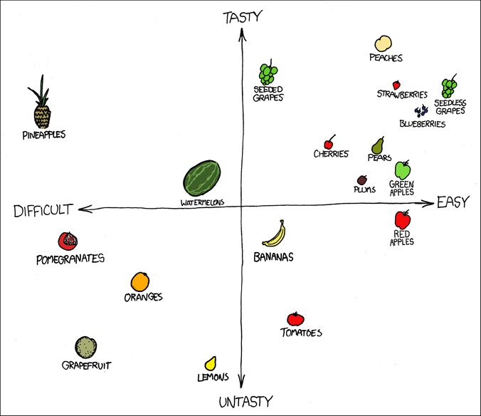
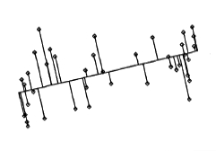
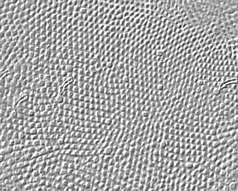
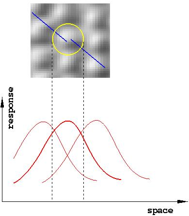
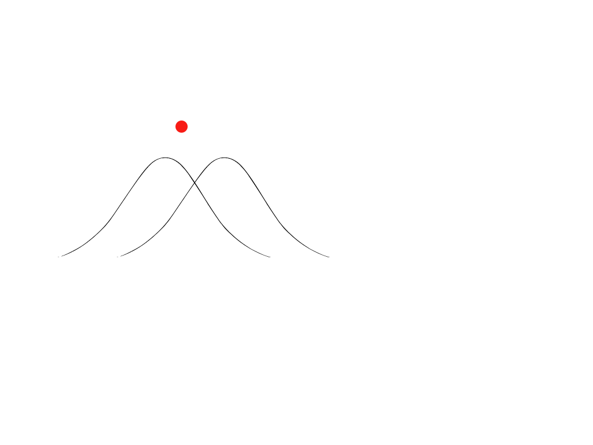
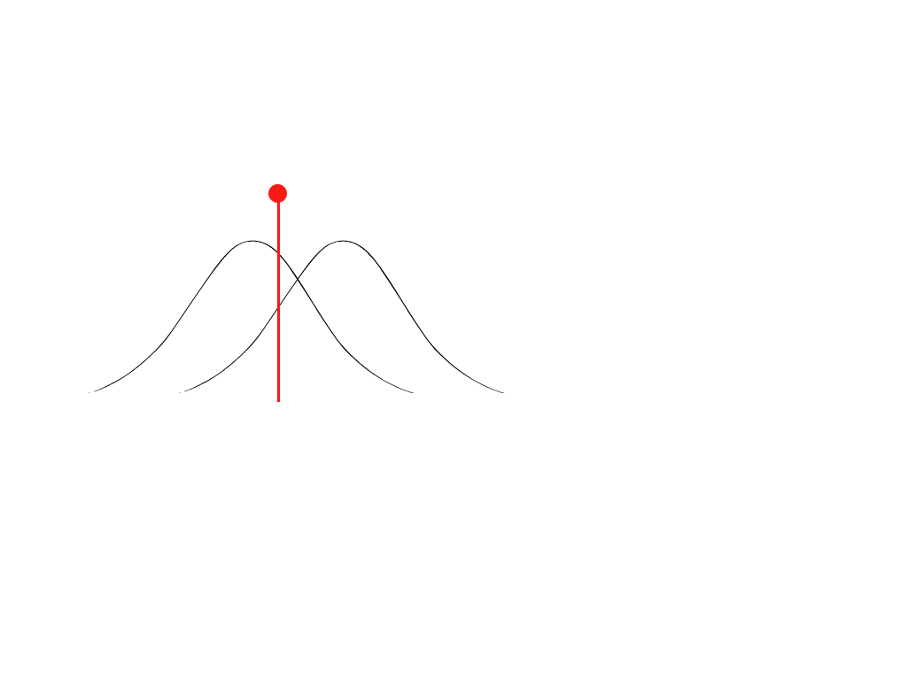

Week 3: measurement and representation
Lecture 3.1

Lecture 3.1: perceptual measurement
Perception involves the brain performing many measurements
on the outside world.
Think of this is as intelligence-gathering for the sake of the
command-and-control processes that reside in the War Room. No generals,
though!
perceptual measurement
")
Perception involves the brain performing many measurements
on the outside world.
The measurements are structured in space and time, and they carry
information about the space-time structure of the world.
The use of
ITD in sound localization was one example; another one is
shown here on the right; yet another one will come up later in this
lecture.
How many measurements?
A lot!
dimensionality of representation space = # of
measurements PER POINT

The measurements populate a REPRESENTATION SPACE.
It's a topological SPACE (not
merely a set) because intermediate points in it make sense too (think morphing).
In this example, the "fruit space" has 2 dimensions, which means 2 numbers per point.
Each point represents a
single kind of item (apples, bananas, etc.).
how many dimensions?
Consider a ball rolling down a hill...
how many dimensions?

Consider a ball rolling down a hill.
To represent this process, one must represent a function that maps
time
[the domain of the function]
to
the state of the ball
[the range of the function].
How many dimensions does this function's range possess?
how many dimensions?
Consider a skier tumbling down a hill...
how many dimensions?

Consider a skier tumbling down a hill.
To represent this process, one must represent a function that maps
time
[the domain of the function].
to
the state of the skier
[the range of the function].
How many dimensions does this function's range possess?
1-D, 2-D, and 3-D measurement spaces

1-D, 2-D, and 3-D measurement spaces
What if one carries out 4 simultaneous measurements?
[a 29-dimensional representation space]

[For a scientific debunking of such approaches to
matchmaking, see this article.]
[If you both think "foreign movies" is a coherent category, you deserve each other.]
the state space of a 3-neuron brain
The diagram shows the trajectory — state plotted against
time — of a three-neuron dynamical system
through the space of its possible states.
brain activity space

Neuronal activity spans a multidimensional representation space, in which
each stimulus is represented by a point.
- Three neurons — three dimensions. In the illustration on the
right, 13 items/objects are being represented in a three-neuron system.
- Eight neurons — eight dimensions.
- 17 neurons — 17 dimensions.
- 106 neurons — ...
the dimensionality of vision
How many dimensions are there in the data that the eye sends to the brain?
About 1,000,000.
playing with the number of dimensions
mapping a 4D space into a 3D space: dimensionality reduction
what for? perhaps information preserving maximizing reduction of dimensionality
 |
 |
| a 2D dataset — think apples that vary in (1)
color and (2) mushiness |
the same data, mapped into 1D by Principal Component
Analysis (PCA) = projection onto the first principal direction |
a glimpse of one of the things that neurons compute natively: projection

Mathematically, projecting an N-dimensional quantity (a list of
N numbers, or a vector)
onto a 1-dimensional subspace (a line) amounts to multiplying the vector's elements by
individual weights that define the line's orientation and then summing the
results — just like the computation that neurons carry out:
out = w·x = w1× x1 + w2× x2
On the right, the input x=(x1,x2) and
the weight w=(w1,w2) vectors are
plotted together in the same 2D space. The dotted line shows the change
that the weight vector undergoes through learning (see next slide).
one of the things that neurons do natively: learn interesting projections
Mathematically, projecting an N-dimensional quantity (a list of
N numbers, or a vector)
onto a 1-dimensional subspace (a line) amounts to multiplying the vector's elements by
individual weights that define the line's orientation and then summing the
results — just like the computation that neurons carry out:
out = w·x = w1× x1 + w2× x2
Neurons with experience-dependent Hebbian synapses (as in: spike timing dependent
plasticity, STDP, to be discussed later this semester)
learn
the projection that maximizes the variance of the data in the
resulting space. In other words, they carry out Principal Component Analysis
or PCA.
neurons can reduce dimensionality NATIVELY, by doing what they do [= projection]

A neuron projects its input space onto the single dimension (single
number) represented by its output.
A set of K neurons fed by the same set of N input fibers project their common
N-dimensional input space onto the K-dimensional space
spanned by their outputs.
In this illustration, N=4 and K=3.
[Later, we will come across many uses of dimensionality reduction in
cognitive computation, as well as many examples of computation that
neurons do natively.]
a visual task that illustrates the importance of spatially structured measurements: acuity
Dimensionality is about the number of measurements.
The spatial structure of the measurements is very important
(as is their temporal structure).

On the right: two types of stimuli, illustrating
two-dot and vernier acuity tasks —
the measurement device

On the right: a magnified image of the retinal mosaic —
This is the fovea, hence no rods — only cones.

hyperacuity

The smallest discernible vernier, as it projects onto the retinal mosaic
—
Note that the vernier displacement is much smaller than photoreceptor
size.
This is an example of hyperacuity-level performance.
Right: a cross-section of the receptive fields
of three adjacent receptors.
appreciating hyperacuity


"mittens" or "tabletop" receptive field (RF) coding isn't very good

This measurement device is too insensitive: two close-by dots will likely
fall under the same RF and their locations will be perceived as the same.
"high-resolution" coding isn't very good either, in another way

This measurement device is too sensitive: if two dots
fall under different RFs, their locations will be perceived as merely
different, resulting, as in the case of broad flat RFs, in a loss of
information about their actual separation.
overlapping "tabletop" coding is better

Can you tell why this is better?
overlapping, graded RF coding is the thing!

Can you tell why this is even better?
here's why broad, overlapping, graded receptive fields are so effective

Even small lateral displacements of the dot will not go unnoticed: they
get transduced into measurable changes in the outputs of the RFs.
here's why broad, overlapping, graded receptive fields are so effective
Can you tell why the performance for the vernier (two-line) stimulus is so much
better than for the two-dot stimulus?
Summary: hyperacuity-level performance is possible because
- the RFs are graded, and
- the RFs are broad and overlapping in space.
a simple explanation of vernier hyperacuity [from the textbook]

An extremely simple measurement device ("retina") — just two receptive fields
(RFs).
This very simple system illustrates two very general principles:
- the ubiquity of "channel coding" / hyperacuity
- the broad applicability of learning from examples
Perceptual learning can be based on populating a representation
space with exemplars. Here are a couple of ways of using the accrued
exemplars to decide about a new stimulus:
-
A new stimulus x can be attributed to the
same category as its nearest neighbors in the representation
space.
-
A new stimulus can be categorized on the basis of its
representation-space location relative to a decision line.
[EXTRA: a computational model of hyperacuity perception and learning]

Fast Perceptual Learning in Visual Hyperacuity,
Tomaso Poggio; Manfred Fahle; Shimon Edelman
Science, New Series, Vol. 256, No. 5059. (May 15, 1992), pp. 1018-1021.